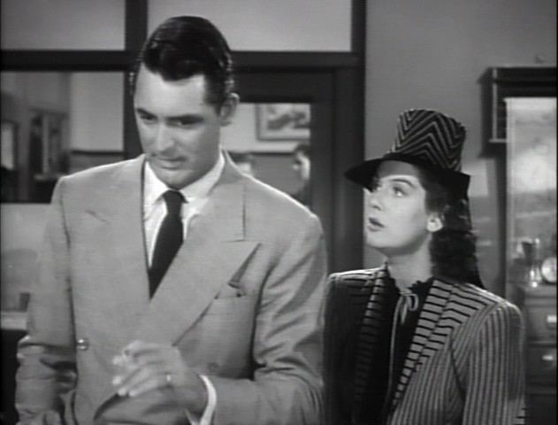

His Girl Friday, frame at 5:32
Howard Hawks · 1940 · Film, black and white (frame)
Free to use
The play The Front Page had two men as editor and reporter. During auditions, Howard Hawks's secretary read the reporter's lines, Hawks liked how they sounded from a woman, and the script was rewritten to make Hildy the editor's ex-wife. Carole Lombard was too expensive, and Katharine Hepburn, Claudette Colbert, Ginger Rogers and Irene Dunne among others turned the part down before Rosalind Russell was cast. Cary Grant was chosen almost at once.